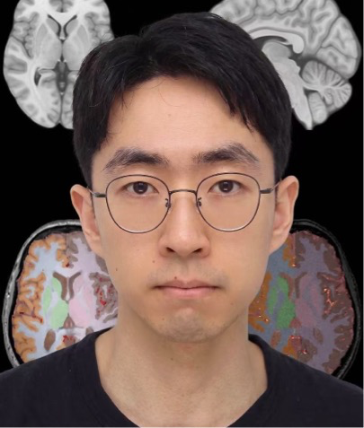
Hello, my name is Xiaoming, it's a pleasure to meet you.
My research interests lie at the intersection of medical image analysis, radiology, neuroimaging and oncology imaging, with a focus on real-world diagnostic challenges and understanding brain ageing across the lifespan.
I am currently contributing to the ERC Consolidator Grant project CARAVEL, led by Professor Maria A. Zuluaga, also in close collaboration with Professor Sébastien Ourselin
and Professor Daniel Rüeckert.
I have been fortunate to receive guidance from Professor Le Lu, Professor Tianrui Li and Professor Pascal Prea during my journey in translational medicine and computer science.
Outside of research, photography is one of my passions. It connects with my interest in visual perception and low-level vision. Below is a small collection of my scenic photographs, which I hope you enjoy.
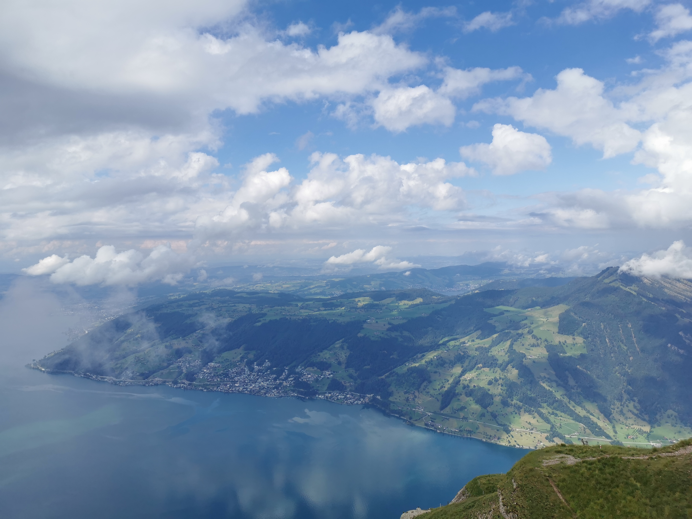
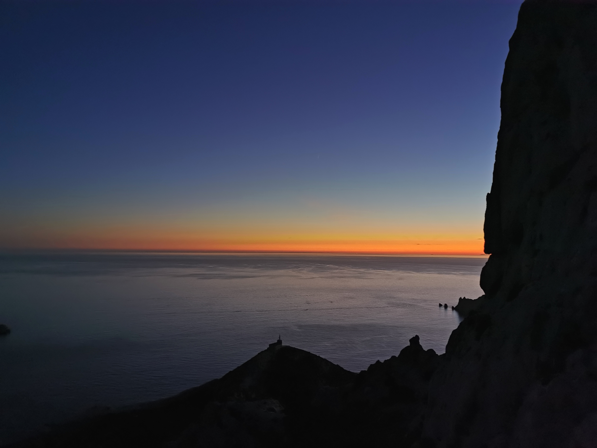
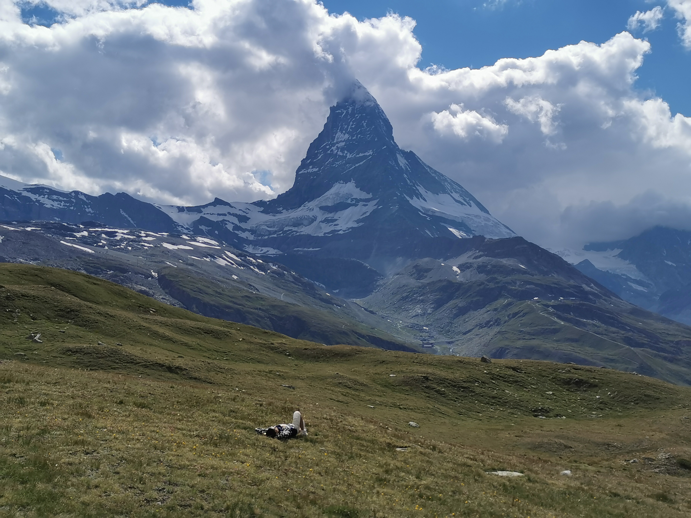
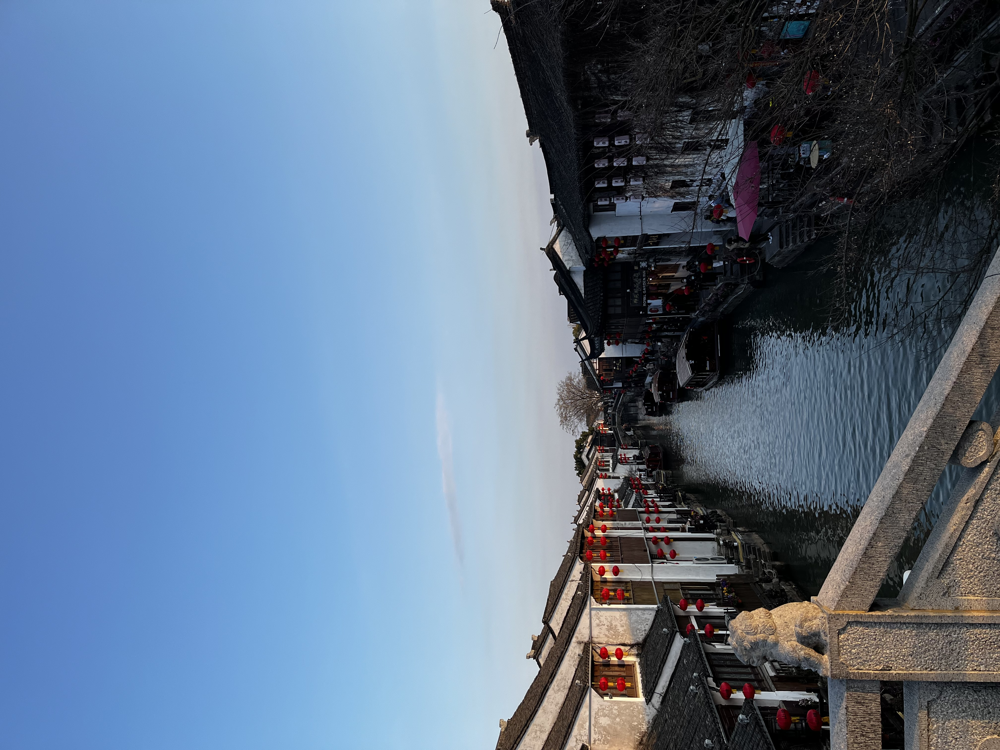
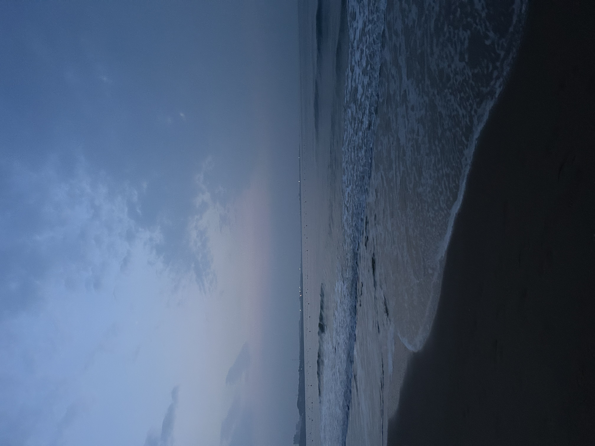
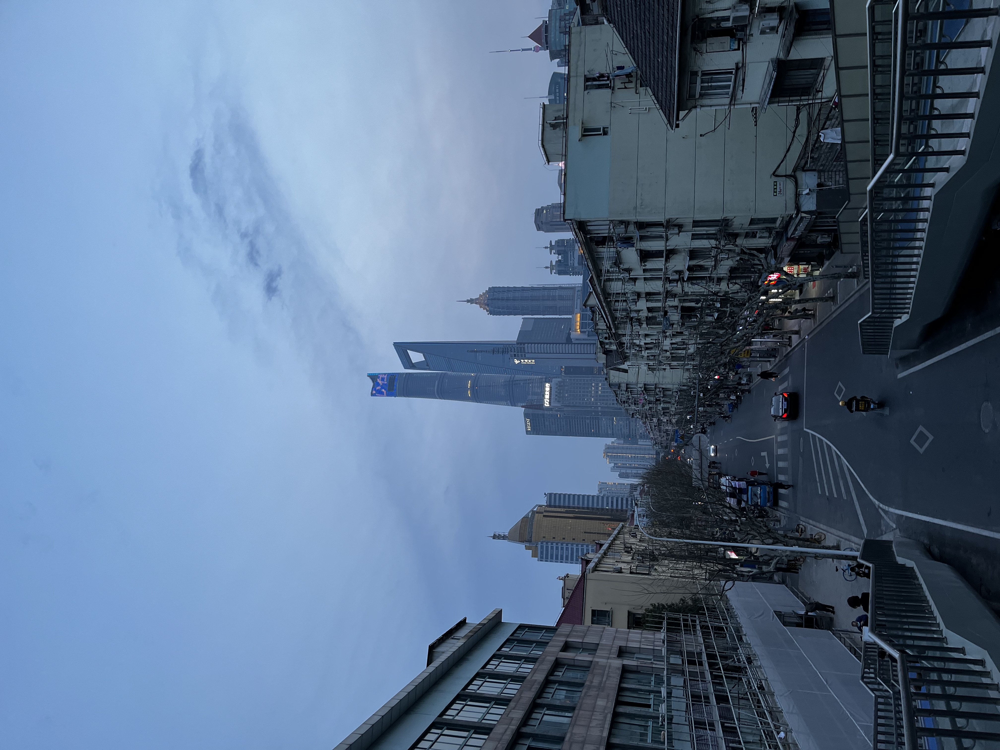
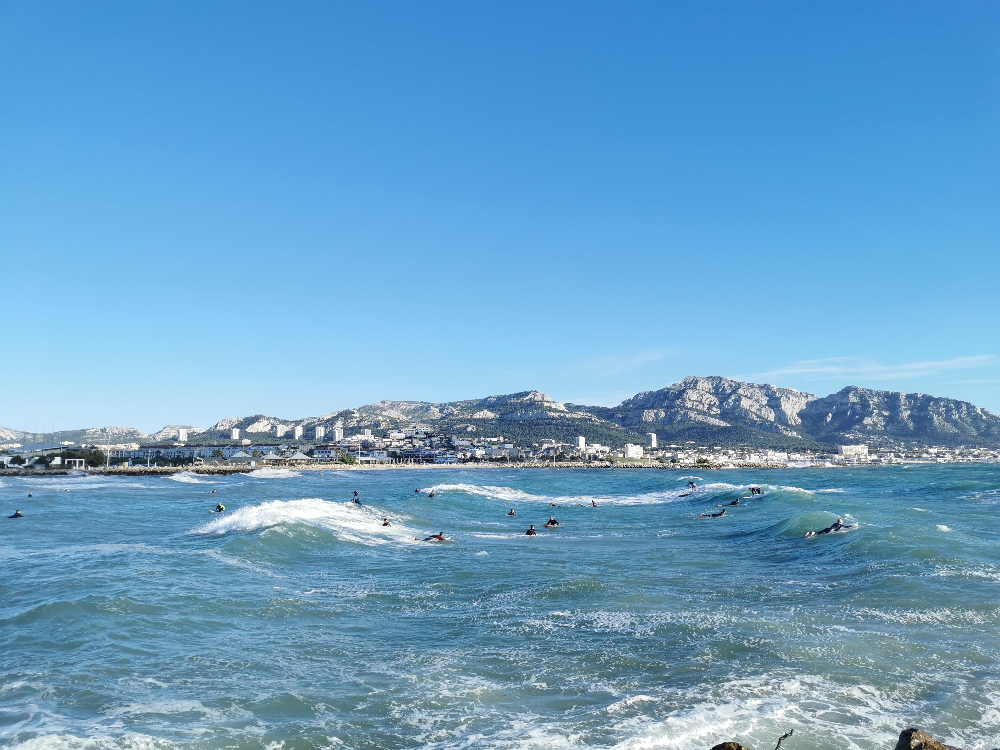
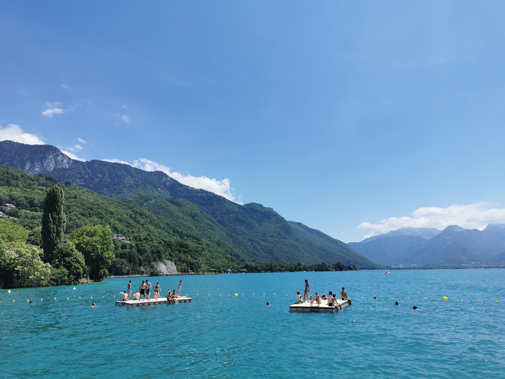
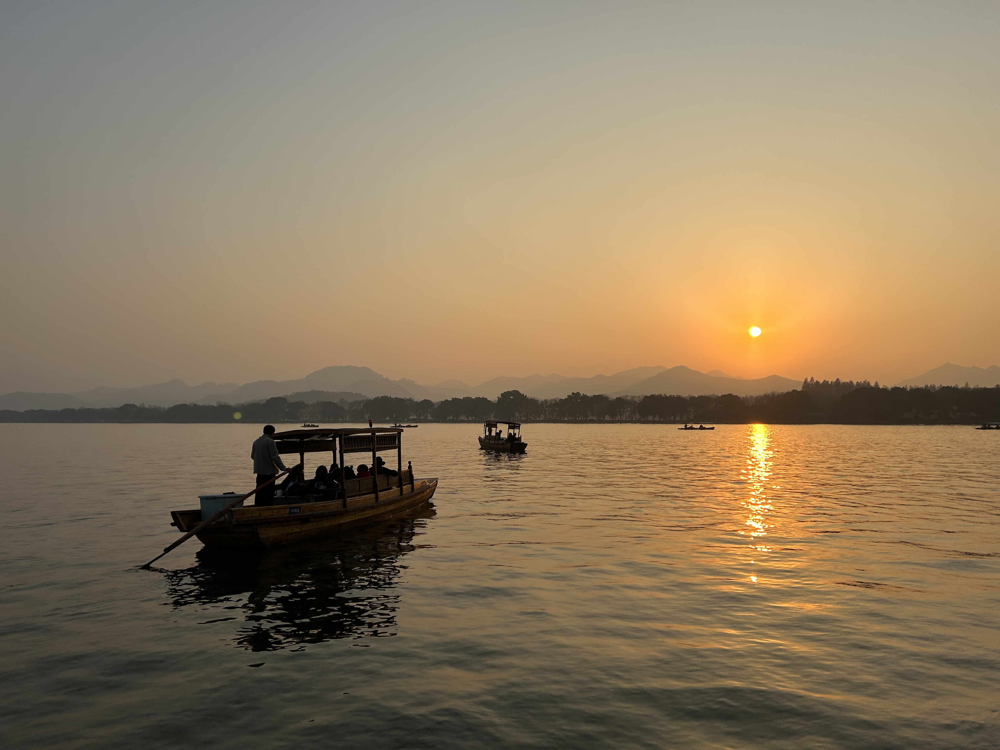
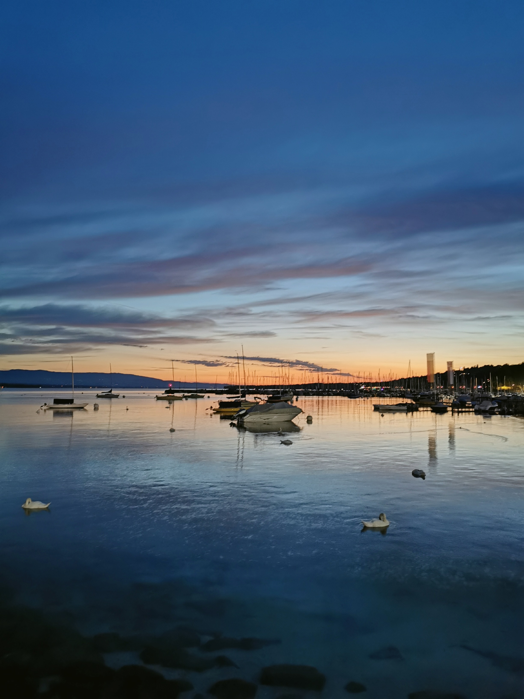
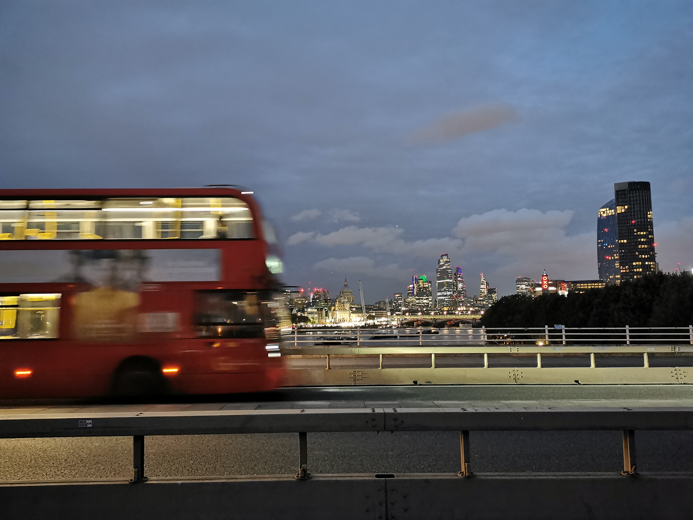
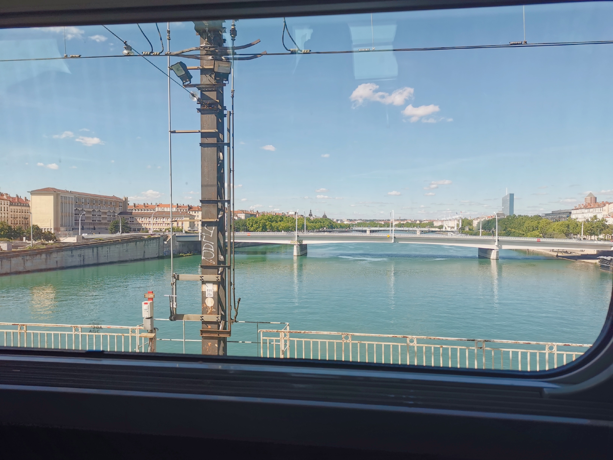